КЕРУВАННЯ
Працює самостійно 24/7
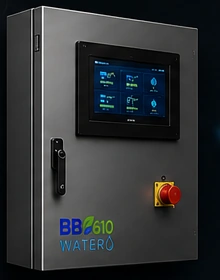
- Автономний контролер
- Захист та безпека
- Журнал подій та статистика
- Дистанційний контроль

BB610 WATER — точний полив і фертигація для господарств, теплиць, розсадників та ландшафтних систем. Від простого поливу до автоматичного контролю pH та EC.
Працює самостійно 24/7

Точні параметри кожного поливу
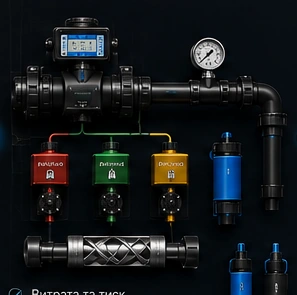
Кожна зона отримує заданий об’єм води
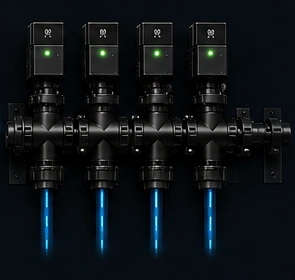
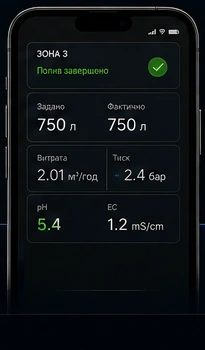
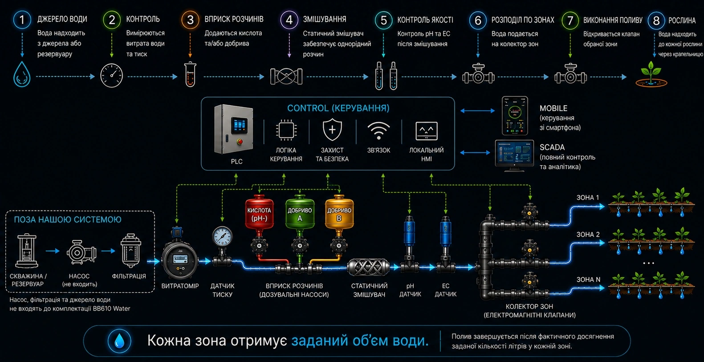
Готові функціональні модулі, які підключаються між собою без складного монтажу на об’єкті.
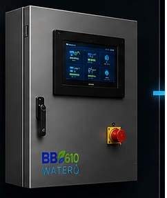
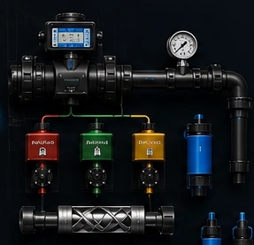
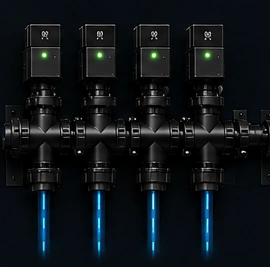
| Версія | Функції | Ціна, тис. грн | ||
|---|---|---|---|---|
| Z4(8)без HMI / з HMI | Z8(12)без HMI / з HMI | Z12(16)без HMI / з HMI | ||
| I | Полив | 209 / 234 | 229 / 254 | 252 / 277 |
| F1 | Полив + 1 канал фертигації | 244 / 269 | 265 / 290 | 287 / 312 |
| F1-PH | Полив + 1 канал фертигації + автоматична корекція pH | 307 / 332 | 327 / 352 | 350 / 375 |
| F1-EC | Полив + 1 канал фертигації + контроль EC | 274 / 299 | 295 / 320 | 317 / 342 |
| F1-PE | Полив + 1 канал фертигації + pH + EC | 337 / 362 | 357 / 382 | 380 / 405 |
| F2 | Полив + 2 незалежні канали фертигації A / B / A+B | 280 / 305 | 300 / 325 | 322 / 347 |
| F2-PH | Полив + 2 канали A / B / A+B + автоматична корекція pH | 342 / 367 | 362 / 387 | 385 / 410 |
| F2-EC | Полив + 2 канали A / B / A+B + контроль EC | 310 / 335 | 330 / 355 | 352 / 377 |
| F2-PE | Полив + 2 канали A / B / A+B + pH + EC | 372 / 397 | 392 / 417 | 415 / 440 |
* Ціни наведені як робочі орієнтири. Фінальна комплектація та вартість уточнюються перед замовленням.
BB610 Systems об’єднує Mobile та SCADA. BB610 Intelligence аналізує дані системи, виявляє відхилення та формує рекомендації.
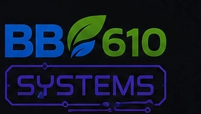
Єдина система керування та моніторингу
Система у вашому телефоні
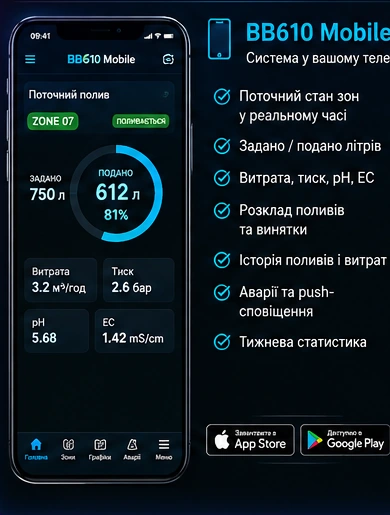
Повна картина роботи системи

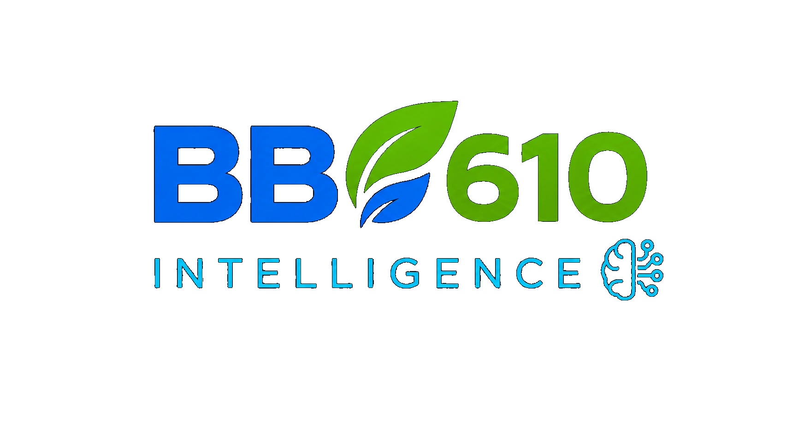
Інтелектуальний аналіз та рекомендації
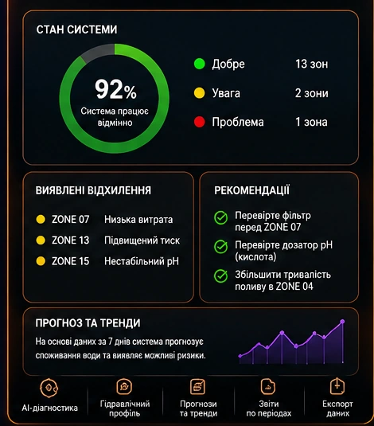
Система поливу та фертигаціїРозкажіть про кількість зон, тип поливу та потрібні функції — підберемо оптимальну конфігурацію BB610 Water для вашого господарства.